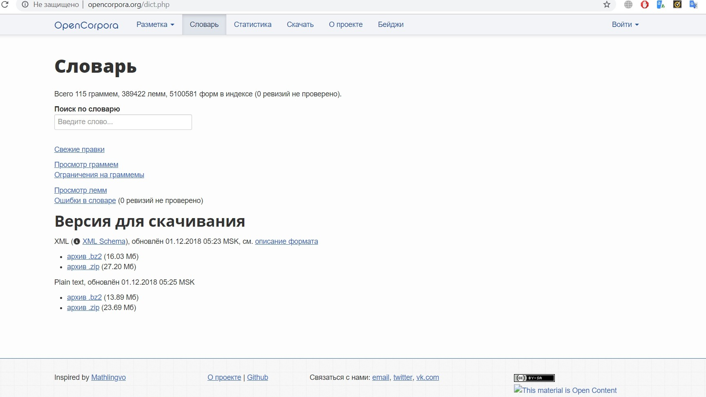

Мое портфолио

Информация о себе!
ФИО: Шек Дарья Станиславовна
Место учебы: НИУ ВШЭ (ФГН) Филология
Научные интересы: русская поэзия ХХ века, нарративный потенциал современных медиа, инди-игры, мифология
Я говорю на английском и французском языках,люблю исследовать культурные феномены современности, рушить жанровые границы, а еще черный чай с молоком и мёдом.
Как современные технологии могут помочь филологу
Сейчас гуманитариям необходимо работать с большими массивами данных, поэтому сотрудничество с технологиями в этой сфере становится всё более насущной необходимостью. Более того, цифровые разработки позволяют переводить тяжелые корпуса текстов в удобный веб-формат, что значительно ускоряет рабочий процесс. Оcтается только смириться :D
P.S Пара слов во славу опенкорпоры

Контакты
GitHubГитхаб
Телефон +79852561787
email dasha.shek@mail.ru